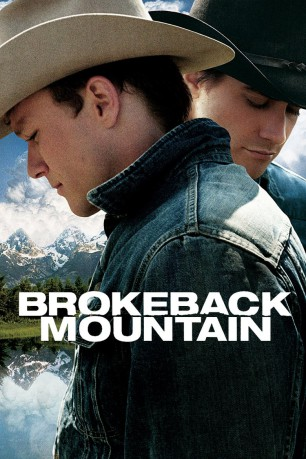
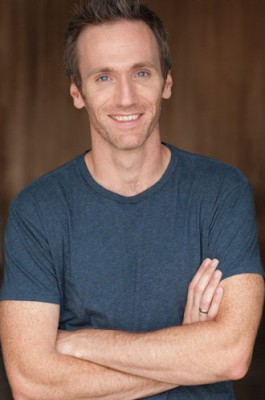
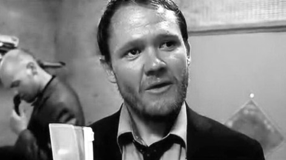
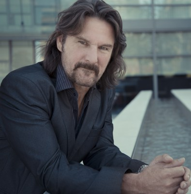
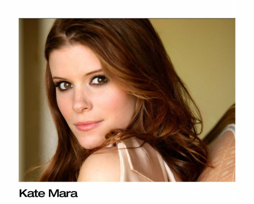

#2135 Brokeback Mountain
Auszeichnungen: 3 Oscars gewonnen für 5 Oscars nominiert 4 GoldenGlobes gewonnen 3 BAFTA-Awards gewonnen
 
 IMDB-Wertung: 7.7 / 10
IMDB-Wertung: 7.7 / 10  Metascore: 87
Metascore: 87 
Im Jahre 1963 treffen sie sich das erste Mal: die beiden Cowboys Ennis del Mar (H. Ledger) und Jack Twist (J. Gyllenhaal). Auf einer Farm in Wyoming werden sie gemeinsam für den Besitzer dessen Schafe hüten. Einen Sommer lang, Tag für Tag, werden sie zusammen auf die Herde aufpassen und sich besser kennen lernen. Bald jedoch bemerken sie, dass sie mehr als die Tiere verbindet, denn sie verlieben sich ineinander. Doch ebenso schnell realisieren sie, dass ihre Liebe von niemandem akzeptiert würde und sie diese unter Verschluss halten müssten. Am Ende des Sommers werden alle Gedanken zerschlagen, da sich ihre Wege wieder trennen und sie versuchen müssen, ein Leben ohne den anderen zu führen. Beide heiraten, Jack die lebenslustige Lureen (A. Hathaway) und Ennis Alma (M. Williams), woraufhin alles vergessen scheint. Erst Jahre später, immer noch nicht voneinander losgekommen, sehen sie sich wieder...
Jahr: 2005
Dauer: 134 Minuten
FSK: 12
Land: USA Studio: Focus FeaturesTonspuren: DTS - ,
Untertitel:
Auflösung: 1080p (1920x1040) Größe: 8345 MB
Genre: Drama, Liebe
Regisseur:  Ang Lee
Ang Lee
Drehbuch: Annie Proulx, Larry McMurtry, Diana Ossana
Soundtrack: Gustavo Santaolalla
Darsteller:
 Heath Ledger als Ennis Del Mar
Heath Ledger als Ennis Del Mar Jake Gyllenhaal als Jack Twist
Jake Gyllenhaal als Jack Twist Randy Quaid als Joe Aguirre
Randy Quaid als Joe Aguirre- Valerie Planche als Waitress
 Michelle Williams als Alma
Michelle Williams als Alma-  Tom Carey als Rodeo Clown
- Dan McDougall als Bartender #1
- Steven Cree Molison als Biker #2
 Anne Hathaway als Lureen Newsome
Anne Hathaway als Lureen Newsome- Dean Barrett als Bartender #2
-  Scott Michael Campbell als Monroe
 Graham Beckel als L.D. Newsome
Graham Beckel als L.D. Newsome- Brooklynn Proulx als Jenny, Age 4
- Pete Seadon als Farmer #2
- Cheyenne Hill als Alma Jr., Age 13
- Jake Church als Bobby, Age 10
-  John Tench als Roughneck #2
 Linda Cardellini als Cassie
Linda Cardellini als Cassie Anna Faris als Lashawn Malone
Anna Faris als Lashawn Malone David Harbour als Randall Malone
David Harbour als Randall Malone-  Kate Mara als Alma Jr., Age 19
 Roberta Maxwell als Jack's Mother
Roberta Maxwell als Jack's Mother Peter McRobbie als John Twist
Peter McRobbie als John Twist- Barb Mitchell als Western Dancer , uncredited
- Jayson Therrien als Bar Patron , uncredited
- Erika Walter als Waitress #2 , uncredited
 Dave Trimble als Basque
Dave Trimble als Basque- Victor Reyes als Chilean Sheepherder #1
- Lachlan Mackintosh als Chilean Sheepherder #2
- Larry Reese als Jolly Minister
- Marty Antonini als Timmy
- Don Bland als Biker #1
- Duval Lang als Announcer
- Hannah Stewart als Alma Jr., Age 3
- Mary Liboiron als Fayette Newsome
- Kade Phillips als Ennis, Age 9
- Steffen Cole Moser als K.E. Del Mar, Age 11
- Keanna Dubé als Alma Jr., Age 5
- James Baker als Farmer #1
- Sarah Hyslop als Alma Jr., Age 9-12
- Jacey Kenny als Jenny, Age 7-8
- Jerry Callaghan als Judge
- Cayla Wolever als Jenny, Age 11
- Ken Zilka als Roughneck #1
- Will Martin als Carl
- Gary Lauder als Killer Mechanic
- Christian Fraser als Grease Monkey
- Cam Sutherland als Assailant
- Mary McBride als Singer , uncredited
- Rodrigo Prieto als Young Mexican , uncredited
Datei: X:\2005(A-F)\Brokeback Mountain (2005, FSK12, 1920x1040).mkv seit 07.10.2015
Festplatte: HD 2003-2004-2005(A-F)
 Es gibt insgesamt 49 Filme in der Gruppe '2005(A-F)'
Es gibt insgesamt 49 Filme in der Gruppe '2005(A-F)'